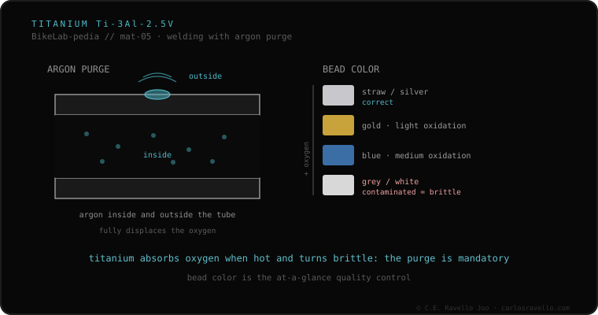

Frame titanium is grade 9 (Ti-3Al-2.5V: 3% aluminum, 2.5% vanadium). It's TIG-welded, but with a demand that sets it apart: you must purge the inside and outside of the tube with argon during welding. Hot titanium absorbs oxygen avidly, and that oxygen embrittles the bead. The cue is visual and direct: a well-shielded bead is straw or silver; blue, gray or whitish means contamination.
If your frame is titanium, this is the fact that decides which shop should touch it: not just any.
Frame titanium is the grade 9 alloy, Ti-3Al-2.5V, with 3% aluminum and 2.5% vanadium. It's TIG-welded, like steel or aluminum, but with a condition that sets it apart: you must purge with argon both the inside and the outside of the tube during welding. The reason is chemical: hot titanium absorbs oxygen avidly, and that oxygen embrittles the bead. If air reaches the hot metal, the joint turns brittle inside even if it looks solid outside.
The good news is that titanium warns you. There's a direct visual cue in the bead color: well-shielded, it stays straw or silver; if it turns blue, gray or whitish, there was contamination from a lack of inert gas. That's why titanium isn't worked in just any shop: it needs the purge equipment and the skill to do it.

Reading the bead color is one of the key questions to ask the welder: the inert-gas purge is essential in titanium and its absence produces the embrittlement described. It also fits with what happens in the heat-affected zone and with the general difference between melting the tube or joining it without melting (TIG and brazing). Titanium is fused, like steel, but with a shielding demand no other material in the cluster imposes so harshly.
If you're unsure about the state of a bead or who should touch it, send us the case. Real diagnosis, nothing to sell you. Message us on WhatsApp
Frame titanium is grade 9, the Ti-3Al-2.5V alloy, with 3% aluminum and 2.5% vanadium. It's TIG-welded, but demands purging the inside and outside of the tube with argon during welding.
Hot titanium absorbs oxygen avidly, and that oxygen embrittles the bead. That's why the hot zone must be isolated from the air by purging the inside and outside of the tube with argon during welding.
By the color: well-shielded, it stays straw or silver. If it turns blue, gray or whitish, there was contamination from a lack of inert gas. That's why titanium isn't worked in just any shop: it needs the purge equipment and the skill.